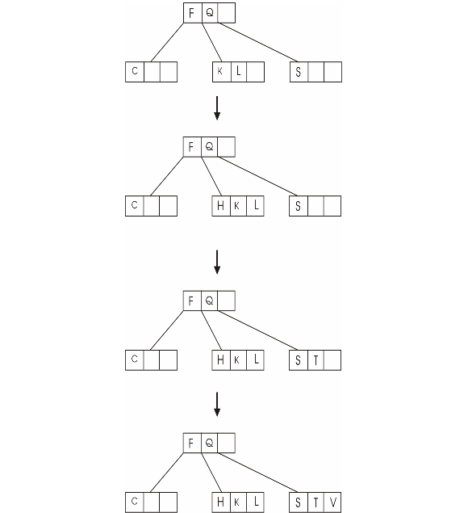
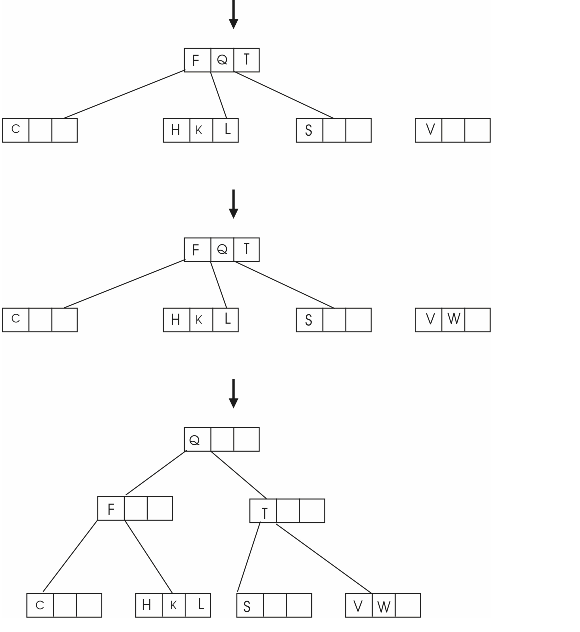
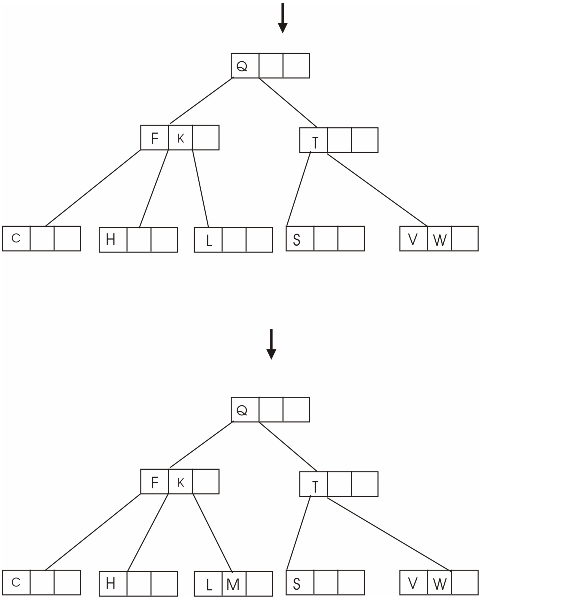
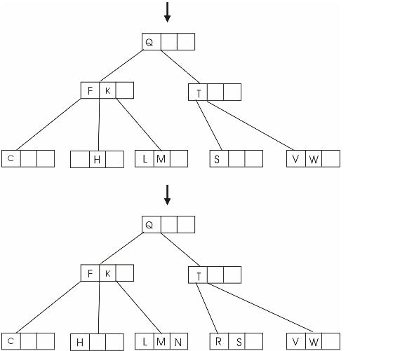
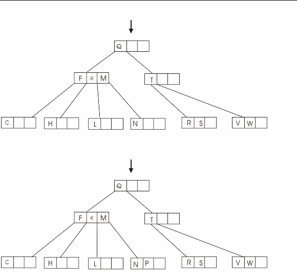
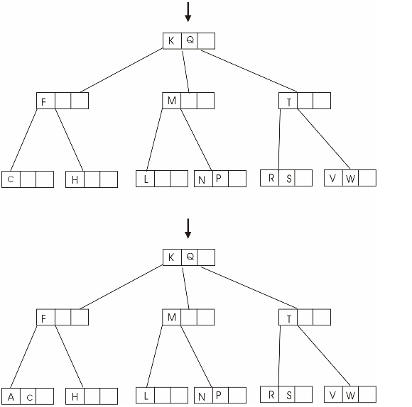
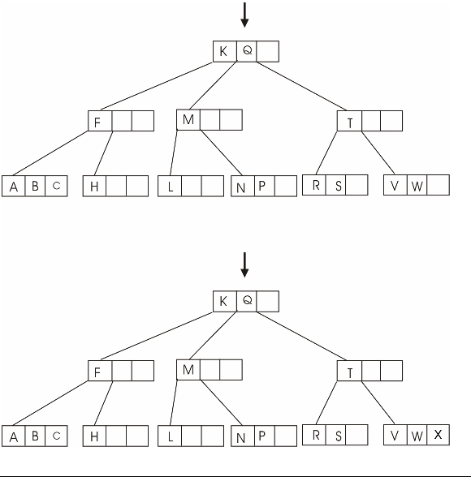
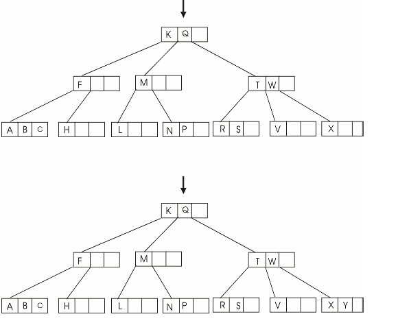
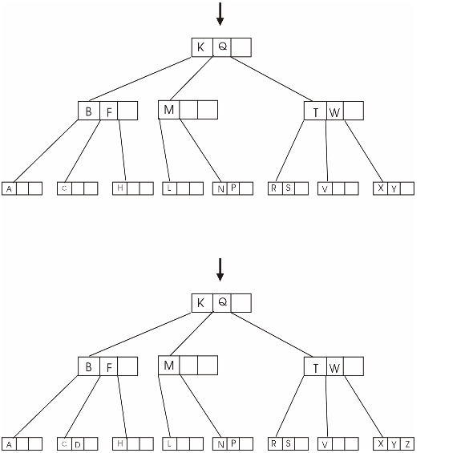
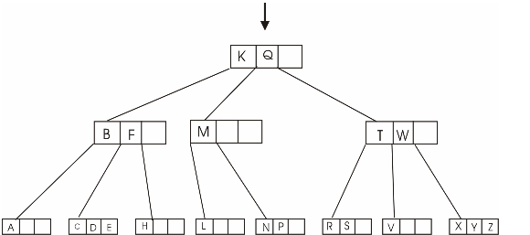

A data structure which is used to maintain the ordered set of data element and that provides the different type of operation such as search, insert, delete and browse the data in efficient manner, is called the B-tree data structure.
• B-tree algorithm uses DISK-READ and DISK-WRITE operations for reading pages from disk to main memory and writing pages back to disk.
• In B-tree, one unit or one piece of information of stored data is refereed as key. Each key is uniquely defined and it can be placed only at one location in B-tree.
• In B-tree storage, root of the tree is always placed into the main memory. Therefore there is no need to perform the DISK-READ operation on root.
• Only DISK-WRITE needs to be performed on the root node, whenever the root node is changed.
• Refer to the Section 18.2 for procedure B-TREE-INSERT (for inserting a key k into B-TREE T) and B-TREE-INSERT-NONFULL (for inserting a key k into leaf node x of B-TREE T).
• B-TREE-INSERT calls B-TREE-SPLIT-CHILD in order to make sure that recursion never goes to full node. The procedure B-TREE-INSERT splits the root node r into a new node s having two child nodes. This procedure calls B-TREE-INSERT-NONFULL.
• Further, B-TREE-INSERT-NONFULL calls B-TREE-SPLIT-CHILD for splitting node x into child nodes c (denoted by x.c). In the procedure B-TREE-INSERT-NONFULL, DISK-READ (x.c) is not required as the recursion will move down to a child node created by B-TREE-SPLIT-CHILD.
• However, if an object is already in the main memory, there is no need to perform DISK-READ for that object. Thus, there is no need of redundant DISK-READs for the same object, if it is already inserted into B-tree.
• B-tree algorithm performs DISK-WIRTE on an object only if that object is modified. Thus there is no need of DISK-WRITE on the same object, if it is not modified.
Therefore it can be concluded that the redundant DISK-READ and DISK-WRITE operations never occur while the execution of B-TREE-INSERT.
Consider the following algorithm to find minimum key stored into B-Tree.
B-Tree_MIN (a)
// a is the node in B-Tree and if statement is used to check tree is empty or not
1 if a= NIL
//if tree is empty return nil.
2 return NIL
//else statement is used to check leaf node of tree
3 else if a. leaf
//return the minimum key of particular node.
4 return a. key
// else statement is execute when if statement is false.
5 else
//scan the node of tree.
6 Disk-Read (a. d)
// find the minimum key of another node.
7 return B-Tree_MIN (a. d)
Explanation of the Algorithm:
• In the above algorithm minimum key of B-Tree is found similar to finding the minimum key in binary search tree.
• First check the node of B-Tree, if the node is null then return NIL.
• Check leftmost child recursively until the leaf node and return the minimum key.
• If left child of tree is null then the root node of B-Tree will be minimum key.
Algorithm to find the Predecessor of key stored in a B-Tree.
B_Tree_PREDECESSOR (a, j)
// if statement is used to check the node is leaf or not.
1. if a!= leaf
//if node is not leaf then move leftmost sub tree of node.
2. Disk-Read (a. d)
//find maximum in leftmost sub tree.
3. return B-Tree_MAX (a. d)
//else if statement is used to check the value of j.
4. else if j>1
// return the predecessor of node a.
5. return
6. else
//compare the current node by key value.
7. r=a
//if condition is true then enters within loop.
8. While (true)
//if statement is used to check the value of r. c is null or not.
9. if r. c= NIL
//return the null value.
10. return NIL
// store the value in another variable X
11. X= r.c
12. Disk-Read (X. d)
Explanation of the Algorithm:
• In the above algorithm three rules are used to find the predecessor of any node.
• First check, the node a is leaf or not. If a is not a leaf node then finds the maximum in left sub tree. The maximum element is the predecessor of node.
• In second case, if node a is leaf and j>1 then return j-1 key of node a.
• In third case, if tree have no left child then find predecessor of any node by traversing from bottom to top until j>0.
• Finally display the predecessor of node.
B-Tree
For a B-tree
• Except the root node, all other nodes should have minimum keys.
• Every internal node except the root will have minimum of t children.
• In a nonempty tree, the root node must have minimum one key.
• Every node can have maximum keys.
• Every internal node can have maximum of 2t children.
• All leaves will have the same depth, which is considered as the height of the tree.
If the degree of t is 1, the minimum number of nodes will be 0 and the B-tree will be an empty tree. A nonempty B - tree should contain at least one key, thus making degree.
If h is the height of the B-tree, then the root contains
minimum one key and all other nodes will contain  keys.
keys.
• At depth 1 minimum 2 nodes
• At depth 2 minimum 2t nodes
• At depth 3 minimum 2t2 nodes
.
.
.
• At depth h minimum 2th-1 nodes
Depending on the height and degree of the B-tree, the nodes in the final B-tree are determined.